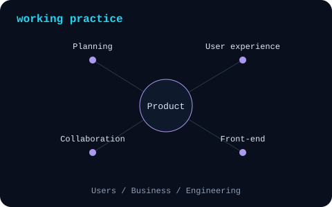
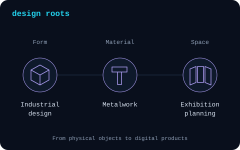

Ever find yourself switching between tools just to finish one task? Or trying to follow a process that nobody has quite written down? Those are the kinds of things that get me curious.
![What catches my attention: A workaround people repeat every day, information they keep asking for, or a task that means switching between tools. I start by understanding what they need to accomplish and where the process gets in the way. What goes into the plan: The main workflow is only part of it. I also work through permissions, missing information and interrupted steps, using requirements, UML and architecture diagrams to make the decisions clear enough to discuss. Why I make prototypes: Some questions are easier to answer when there is something to try. Prototypes help me spot gaps and reconsider the scope; experience with system integration and AWS deployment informs the practical side of the plan.](assets/experience-dark.svg)
|
 |
 |
Focus
Tools & platforms